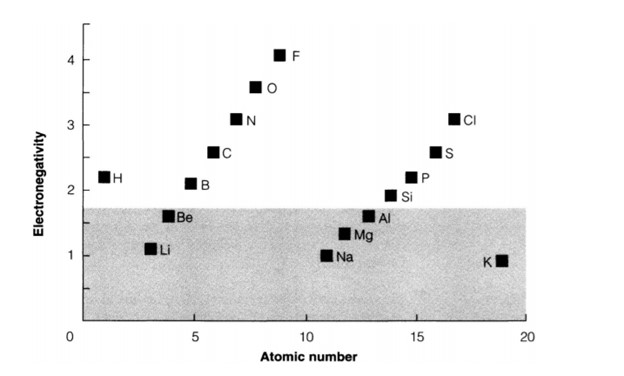

Lesson 2
ELECTRONEGATIVITY AND BOND TYPE
Definitions
Electronegativity may be defined as the power of an atom to attract electrons to itself in a chemical bond.
Each scale produces different numbers and they should not be mixed. The broad general trends do, however, agree:
Electronegativity increases towards the right and decreases towards the bottom in the periodic.
The bonding triangle
The bonding triangle is a useful way of showing how the electronegtivities of two elements A and B (which may be the same) determine the type of bond formed between them. The horizontal and vertical scales show the pauling electronegativities of the two elements. (Other scales would do equally well at this qualitative level.) Pure elements (A=B) appear on the diagonal, and various compounds are shown within the triangle. Three basic regions are distinguished.
When one atom is very electropositive and the other very electronegative, a solid compound is formed that is often regarded as ionic. In this picture there is a complete transfer of one or more electrons, giving cations of the electropositive element and anions of the electronegative one, which are then held together by electrostatic attraction.